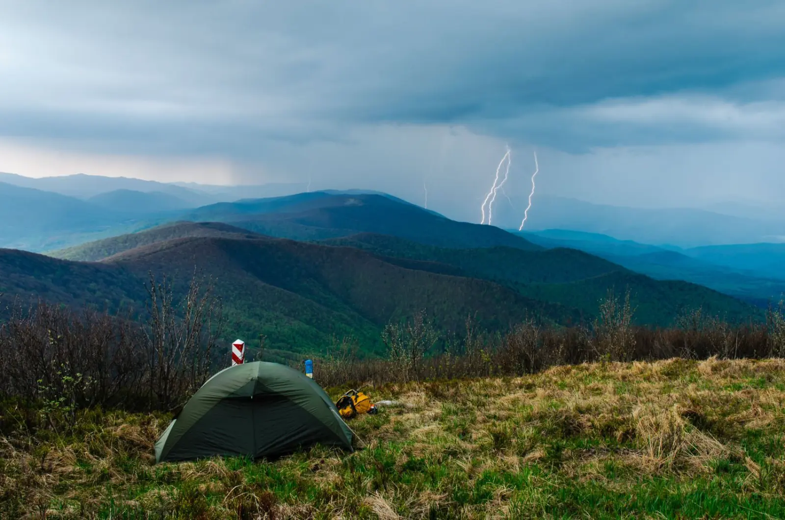

ARTICLE • September 22, 2026
Weekend in the Bieszczady — A 3-Day Plan
Three days is the minimum to truly feel the Bieszczady. A plan that lets you see the mountain meadows, Orthodox churches, and the lake — without haste.

The Bieszczady are not mountains to tick off in a day. Three days is the minimum to truly step into their rhythm — to see the mountain meadows, touch the history of Lemko villages, and sit by Lake Solina without the pressure of time.
Day 1 — Połonina Wetlińska
We start with a classic: Połonina Wetlińska. Take the cable car to Wyżniańska Pass, then walk along the ridge through the mountain meadows to the 'Chatka Puchatka' shelter. Return the same way or descend to Wetlina.
In the evening, it is worth stopping in Cisna — the Bieszczady capital, with local taverns and an atmosphere you won't find elsewhere in Poland.
Day 2 — Połonina Caryńska and Orthodox Churches
The second day is Połonina Caryńska — the most beautiful trail in the entire Bieszczady. Sunrise from the ridge is an experience that stays in memory for a long time. After descending, it is worth driving through the surrounding villages in search of wooden Orthodox churches — in Smolnik, Radoszyce, Turzańsk.
Day 3 — Lake Solina and Return
The last day is a peaceful farewell — a walk along the shore of Lake Solina, a picnic in a quiet cove, a boat cruise. In the afternoon we return via Sanok, where it is worth stopping at the open-air museum and the Icon Museum.
Practical Tips
Accommodation is best booked in Cisna, Wetlina, or Ustrzyki Górne. A car is almost essential — public transport in the Bieszczady is limited. It is worth taking a rain jacket and sturdy shoes, even in summer.